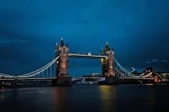

London is the capital of England
it is most populous city in the United Kingdom,with a metropolian area of 9 million inhabitants.
Paris is the capital of France

The Paris area is one of the largest population centres in Eupore with more than 12 million inhabitants.
Tokyo is the capital of Japan
Tokyo is also the financial, cultural, and industrial center of Japan and With a mentropolitan area of 40.8 million inhabitants.